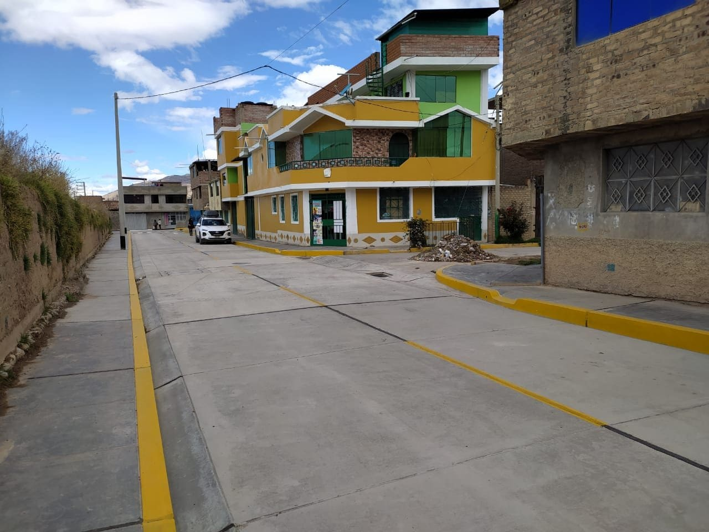

MEJORAMIENTO DE LOS SERVICIOS DE TRANSITABILIDAD VEHICULAR Y PEATONAL
De Los Jirones: San Jose, Ciro Alegria, 04 De Enero, David Canchaya, Clodoaldo Espinoza Y El Psaje Las Retamas.
AUTOR DE PÁGINA ORIGINAL: CAMPOS PAEZ, William Frans
De Los Jirones: San Jose, Ciro Alegria, 04 De Enero, David Canchaya, Clodoaldo Espinoza Y El Psaje Las Retamas.
Contando con un presupuesto aproximado de S/.100 000, contando con el respaldo de los vecinos beneficiarios.
Este cuenta con oficinas administrativas y servicios higienicos
Beneficiará a más de 10 000 habitantes con la recuperación de 7900 m2 de áreas contaminadas por residuos sólidos.
Gracias al esfuerzo y perseverancia de nuestras autoridades distritales, se logró obtener esta máquina del PRONABI (Programa Nacional de Bienes Incautados).
Para la realización de deportes extremos y actividades familiares.
En coordinación con el Ejército Peruano, ello como parte de un convenio interinstitucional, en beneficio de la población yauyina.
Contando con una oficina administrativa para la atención al público. Permitirá garantizar la seguridad ciudadana, en beneficio de toda la población yauyina.
Ejecutado por la Municipalidad Provincial de Jauja, el cual fue observado previamente por diversos ciudadanos.